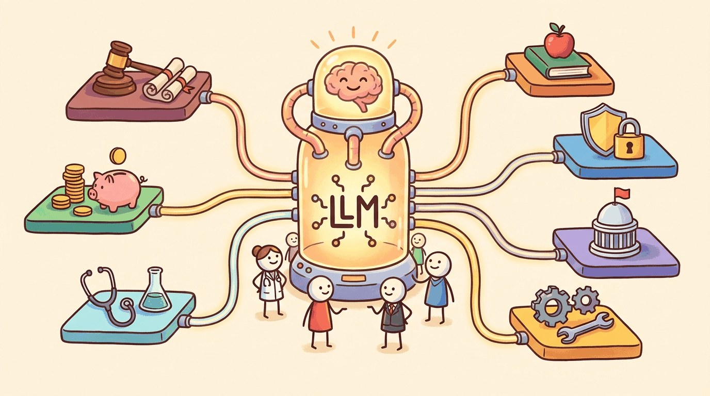

"The future is already here, it's just not evenly distributed."
Compass, Industry-Tracking AI Agent
Part Overview
Part XIV takes the techniques developed across the rest of the book (RAG, fine-tuning, agents, evaluation, safety) and applies them to nine industries with their own data shapes, compliance regimes, and risk profiles. Each chapter starts with what makes the vertical different, then walks through the production patterns that have proven out in the field, the regulatory landscape, and the failure modes specific to that domain.
These are not survey chapters. They are operating playbooks: which model class to start with, where retrieval helps and where it does not, what evaluation looks like under domain constraints, and which guardrails matter most when the cost of a wrong answer differs from a software bug. Read them in any order; each chapter stands alone.
The same LLM stack looks different in every industry. A legal contract review pipeline, a hospital triage assistant, and a manufacturing process-control copilot share infrastructure but diverge on data sensitivity, regulator expectations, and what counts as a "good enough" answer. This Part shows you how to make those translations: how to pick the right architecture for the domain, where to spend evaluation effort, and which industry-specific landmines to avoid before they reach production.
- 73.1 Manufacturing Use Cases That Actually Work
- 73.2 Manufacturing Failure Modes
- 73.3 Regulatory and Standards Framework
- 73.4 Plant-Floor Maintenance Copilot Architecture
- 73.5 Manufacturing Postmortems and Named-Vendor Cases
- 73.6 Music, Video, Design & Marketing Copy
- 73.7 Creative-Industry Failure Modes
- 73.8 Ranking, Retrieval, and Personalization
- 73.9 Search Architecture for LLM Era
- 73.10 Conversational Discovery and Named-Vendor Cases
What's Next?
This part begins with Chapter 67: LLMs in Legal Practice. Each chapter builds on the previous one, so we recommend reading Part XIV in order.